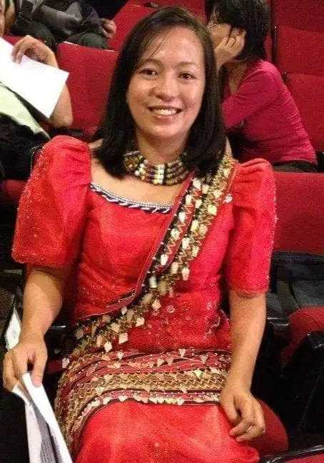

Bestowed with beauty and grace, women are esteemed by many. But beyond that respect ascribed to them, they have so much more to offer than good looks and lovely gestures, because they can achieve great feats with their power and strength.
Women, with their increased participation in significant endeavors, have asserted their vital presence in various aspects of society. Even their role in cultural systems has now been recognized as valuable because women are taking up space. And this is true for the women of Kalinga, who are empowered and illustrious, just like Atty. Catherine Gayagay-Apaling.
Working as the Provincial Officer of the National Commission on Indigenous Peoples (NCIP) in Kalinga, she says that using their customary justice system, which is bodong, in resolving conflicts or disputes has always been inscribed in their ethnic society. It serves as the peace-oriented mechanism that is practiced by indigenous communities since time immemorial. Proven to be effective in quickly resolving disputes between villages, Bodong will continue to be part of indigenous people’s systems. It allows the tension between communities at odds with each other to subside and be peacefully settled. In these activities, women do not usually participate in the process but are informed of the end results of the agreement.
The political structure of Kalinga lacks positions for women to actively participate in the actual negotiation or resolution of the conflict. Most, if not all, negotiators/mediators (mansasakusak) are male elders/leaders that come from neutral tribes. However, Atty. Catherine was privileged to be given the rare opportunity to actively engage in the negotiation of the Butbut-Betwagan Boundary Conflict Resolution, as a member of the Provincial Task Force.
Unfortunately, the resolution of the conflict was not achieved since the community members involved are not ready to meet halfway because of their emotional highs. Atty. Apaling learned that dealing with disputes demands a lot of time, effort, and patience. Along with that, she also realized that support and guidance from government agencies won’t do much in peacefully managing disputes if the opposing tribes are not yet ready to settle their conflict. These external forces don’t have sufficient influence or authority because they can’t impose the tribes to make peace with each other. Good thing is the conflicting tribes requested the Provincial Task Force to give them time to discuss with their respective indigenous cultural communities what decision they should make. Unless there is mutual agreement between them, the conflict will remain unresolved.
During the deliberations, when the community members gather to make a consensus decision regarding the proposition or counter offer of the other tribe, women are given the chance to be engaged in the meeting. That makes their participation indirect and subtle. The community’s decision is represented to the negotiators by the elders.
Taking all of these into account, it is Atty. Catherine’s hope that Kalinga women as empowered as they are now, will take a more active role in the negotiation for peace from today onwards. Women deserve to participate in the community’s decision making, especially in matters affecting their ancestral domain/ ancestral land, and in all aspects of their life and rights as indigenous peoples/indigenous cultural communities of Kalinga.
Empowered and illustrious, “Kalinga women shine!”
31 October 2021